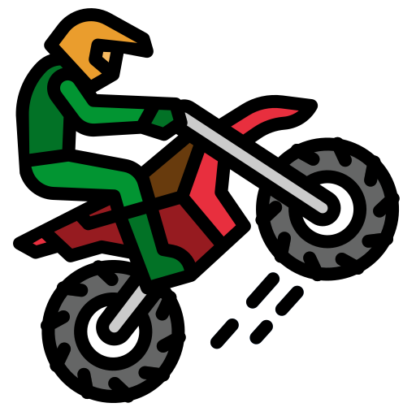
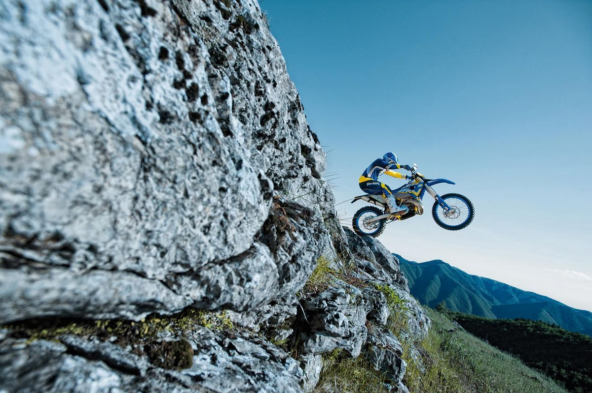

El Enduro02/12/21
Me hace una persona mas aventurera y divertida
El enduro es un deporte, modalidad del motociclismo que se practica en campo abierto y también cubierto. También existe la modalidad de Enduro en bicicleta. Se trata de una carrera tipo rally, en la cual se realizan recorridos por rutas (o etapas) establecidas por la organización en tiempos establecidos. Entre las etapas se pueden encontrar pruebas cortas cronometradas que requieren habilidad,balance,control de el clutch y torque.A mi me gusta mucho porque es un deporte que depende mucho de tu habilidad, obviamente tambien de la moto que tienes pero la mayoria es de tu habilidad.Si te gusta mucho la adrenalina este deporte es para ti.
